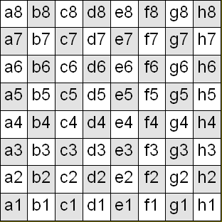
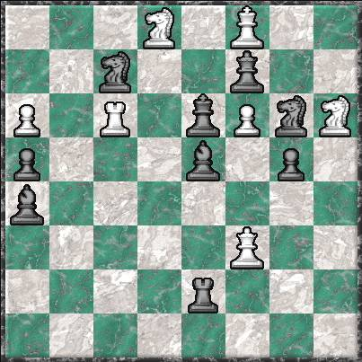
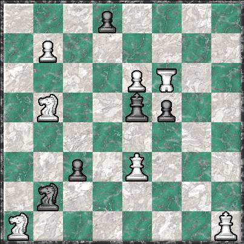
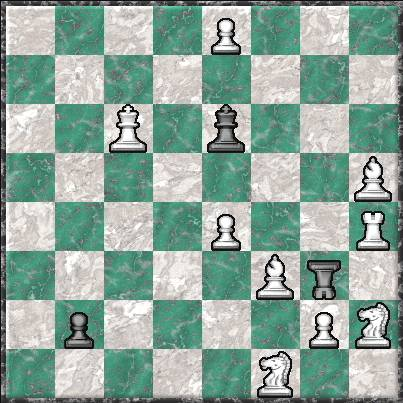
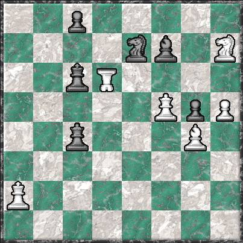

|
To puzzles 5 through 8 To puzzles 9 through 12 To the Ultima page To the games home page |
|
Amazing discovery: The 12 lost Ultima puzzles have been found!
Well, okay, they weren’t really lost; I had just forgotten about them. I created them in the early 1960s and shared them with a few correspondents. In 2004, one of the correspondents, Lee H. Skinner, found my web site and wrote me that he still had the old puzzles. Also, he had implemented them on Zillions of Games, and Zillions found bugs in Puzzles 2 and 5. I worked out fixes for those puzzles, sent them to Lee, he tried them on Zillions, and Zillions still found problems. So I tried again, and again, and after a few tries Zillions was finally satisfied that the puzzles worked. Lee wrote, “I found solving the problems and showing them to others in the 1960s more entertaining than playing the game itself.” That’s my opinion also. I think anyone who knows the rules to Ultima would want to see the puzzles, so I’ve added all 12 of them to this site, starting with puzzles 1 through 4 on this page. I used Zillions’ displays of the puzzles. Note that the Immobilizer is represented as an upside-down rook. |
|
The first puzzle is Mate in 1 and all the others are Mate in 2. This follows the conventions of chess problems, even though in Ultima the object is to capture the king, not achieve check mate. So, Mate in 1 should be translated to Capture the king in 2 moves (that is: White moves, Black moves, then White moves and captures the king). Mate in 2 translates to Capture the king in 3 moves.
When you click on Solution next to a puzzle, you get a pop-up window that describes the solution to that puzzle.
If nothing pops up, try turning off your pop-up blocker.
These descriptions use algebraic chess notation, in which the squares are labeled as shown in the table at the right.
These puzzles are not just appearing here, but David Howe is also adding them to the ChessVariants.org page on Ultima. His write-up of each solution is extensive, and I use some his write-ups in my pop-up windows (and give him credit as the writer). Forty years ago, when I created these puzzles, I only wrote down the first move for White. Now I have trouble remembering what is going on in each puzzle, and I must solve some of them. David Howe's write-ups are especially useful here. |
 |
 Puzzle #1 — Mate in 1 |
|
 Puzzle #2 — Mate in 2 |
|
 Puzzle #3 — Mate in 2 |
|
 Puzzle #4 — Mate in 2 |
|